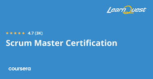
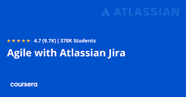

Splunk Search Expert Specialization
Advanced Splunk training focused on building efficient searches, creating useful dashboards, and extracting actionable security and operations insights from machine data.
Skills learned: SPL querying, log analysis, field extraction, reporting, dashboard creation.
View Certificate
Splunk Inc, 2024 | Credential ID: PY9MCCDJGY7E

Scrum Master Certification Specialization
Comprehensive Scrum training covering Agile team facilitation, sprint planning/execution, and scaling Scrum practices across larger organizations.
Skills learned: Scrum framework, Agile ceremonies, backlog management, team facilitation, scaling Agile.
View Certificate
LearnQuest, 2024 | Credential ID: 83HJJ5VX4LO4

Agile with Atlassian Jira
Hands-on course applying Agile project delivery workflows in Jira to plan, track, and manage team execution effectively.
Skills learned: Jira boards, sprint tracking, Agile workflow design, issue lifecycle management, team collaboration.
View Certificate
Atlassian, 2024 | Credential ID: 7ABYYBXCPHY2

Google Project Management Professional Certificate
Career-focused project management program covering end-to-end delivery from initiation and planning through execution and closure.
Skills learned: project planning, risk management, stakeholder communication, scheduling, Agile and Scrum delivery.
View Certificate
Google, 2024 | Credential ID: TMY8JHRL7MT9

Google Cybersecurity Professional Certificate
Foundational cybersecurity program with practical labs in threat detection, incident response, network defense, and security operations tools.
Skills learned: SIEM fundamentals, Linux, SQL, threat analysis, incident response, security controls.
View Certificate
Google, 2024 | Credential ID: 4NA3XL5PV2X8